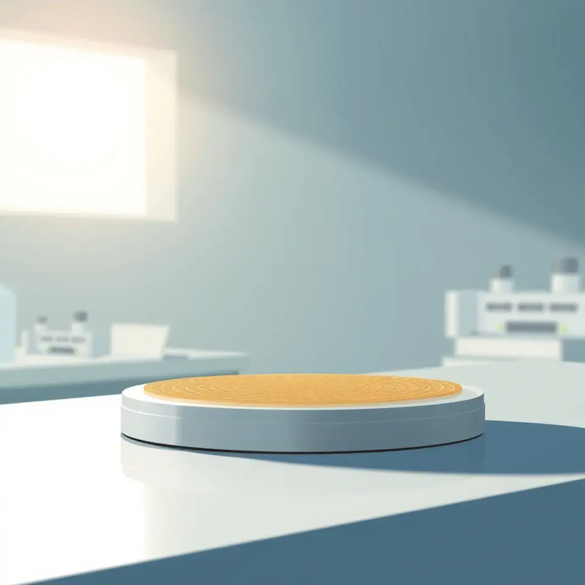

메모리 호황에 대만도 EUV 투자 본격화, 난야·윈본드 추격
메모리 반도체 호황을 맞아 대만 업체 난야와 윈본드가 EUV 투자에 나섰다.

핵심 정리
- 대만 난야·윈본드, EUV 투자 본격화
- 메모리 호황이 설비 투자 자극
- 삼성전자·SK하이닉스와 경쟁 심화
메모리 반도체 호황을 배경으로 대만 업체들이 극자외선(EUV) 장비 투자를 본격화하고 있다는 보도가 나왔다. 난야와 윈본드가 삼성전자와 SK하이닉스를 추격하고 있다는 내용이다.
기사는 두 업체의 투자 움직임을 국내 메모리 강자와의 경쟁 구도 속에서 조명했다. 구체적인 투자 규모나 일정은 제목에서 확인되지 않는다.
이번 보도는 메모리 시장의 호황이 후발 업체들의 설비 투자를 자극하고 있음을 보여준다. 공정 기술 경쟁이 한층 가열될 가능성이 제기된다.
향후 대만 업체들의 EUV 도입 속도와 국내 기업의 대응 전략이 메모리 시장 판도에 영향을 줄지 주목된다.
이 소식을 다룬 보도

 AI 이미지
AI 이미지